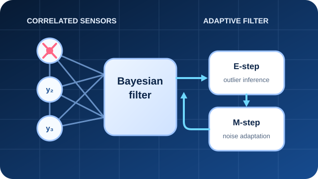

Adaptive robust filtering
EMORF-II: Adaptive EM-Based Outlier-Robust Filtering
EMORF-II addresses nonlinear state estimation when measurement noise is correlated and observations contain outliers. The method combines Bayesian inference with Expectation-Maximization to estimate the system state, detect outliers, and adapt their characteristics during inference, reducing reliance on manually chosen outlier parameters.
Contribution: Led the development, implementation, simulation design, and evaluation of the method across changing outlier probabilities and sensor configurations.
Expectation-MaximizationCorrelated noiseNonlinear filtering